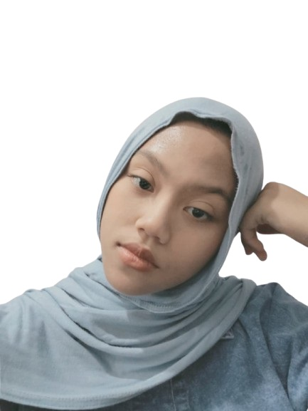

Siswi TKJ di SMK Negeri 1 Batam yang berfokus pada administrasi jaringan dan sistem operasi. Sekaligus seorang pemimpin seni kreatif yang dipercaya mengepalai divisi musik.

Musik
Ketua Divisi
Spesialis
Jaringan & Server
PROFIL SAYA
Saya adalah siswi di SMK Negeri 1 Batam jurusan Teknik Komputer dan Jaringan (TKJ) yang memiliki minat mendalam di bidang infrastruktur jaringan komputer, perakitan perangkat keras, instalasi sistem operasi, dan administrasi sistem.
Selain mematangkan kemampuan teknis, saya aktif melatih jiwa kepemimpinan dan manajerial sebagai Ketua Divisi Musik Sendratasik. Karakter saya terbentuk menjadi pribadi yang disiplin, bertanggung jawab, mampu memimpin tim dengan kolaboratif, serta memiliki antusiasme belajar yang tinggi. Saya siap mendedikasikan kontribusi terbaik saya pada program Praktik Kerja Lapangan (PKL) maupun proyek profesional lainnya.
RIWAYAT AKADEMIS
Teknik Komputer dan Jaringan (TKJ)
Mempelajari keilmuan teknologi informasi terapan dengan fokus utama kurikulum pada:
PENGALAMAN NYATA
SMK Negeri 1 Batam
SMK Negeri 1 Batam
KEPEMIMPINAN & AKTIVITAS
Ketua Divisi Musik (2024 - Sekarang)
Bertanggung jawab mengelola seluruh kegiatan musik, mengorganisasi latihan rutin kelompok seni, mengatur aransemen lagu untuk berbagai event sekolah, serta memimpin tim dalam kolaborasi kreatif demi melatih percaya diri dan disiplin anggota.
Anggota PMR Aktif (2021 - 2024)
Aktif berpartisipasi dalam berbagai aksi sosial, penyuluhan kesehatan dasar, pertolongan pertama pada kecelakaan sekolah, serta berkolaborasi erat dalam kerja sama tim guna menjaga keselamatan lingkungan sekolah.
PLAYGROUND INTERAKTIF
Dengarkan ketukan lofi santai selagi Anda membaca resume ini. Dibuat menggunakan sintesis audio digital instan!
# Masukkan perintah ping ke server khaylannisa.xyz
SKILLSET & ALAT
Sangat terbiasa melakukan crimping kabel LAN (RJ45) dan instalasi/pemeliharaan kabel Fiber Optik.
Terampil merancang subnetting IP, pembagian segmen jaringan, dan melakukan routing statis router.
Ahli merakit komputer, instalasi berbagai sistem operasi (Windows/Linux), dan mengatasi masalah komputer.
Lancar menyusun dokumentasi teknis, pembuatan bagan, presentasi, dan administrasi perkantoran.
MARI BERKOLABORASI
Tertarik bekerja sama untuk program magang (PKL), proyek instalasi jaringan, atau penampilan seni musik sekolah? Hubungi saya kapan pun!
Email Resmi
khaylannisa969@gmail.comNomor Ponsel (WhatsApp)
081222594636Wilayah Aktif
Batam, Kepulauan Riau, Indonesia
Pesan Berhasil Terkirim
Terima kasih, Khaylannisa akan merespons secepat mungkin.